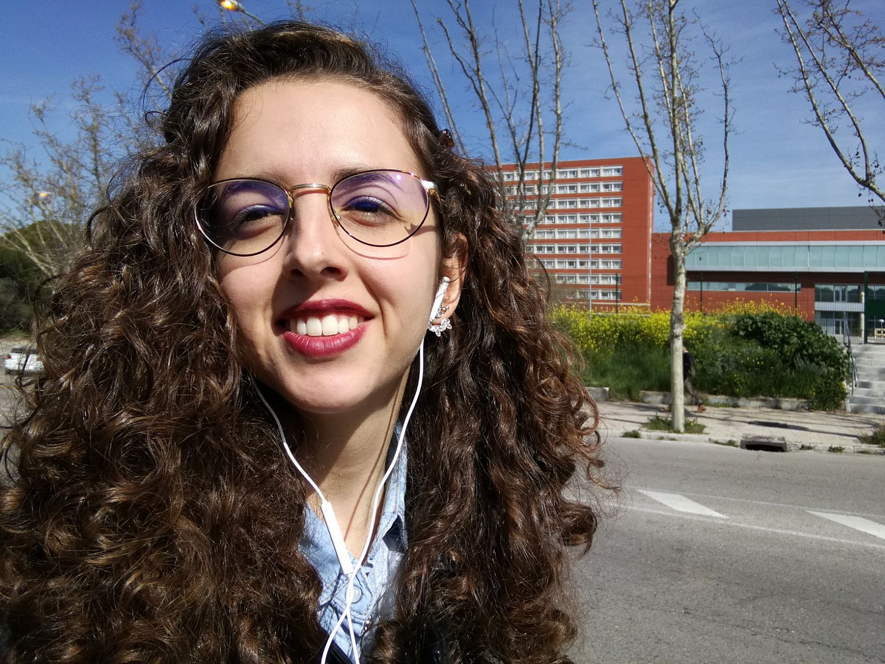

Para mí, la transferencia del conocimiento generado por la investigación académica al resto de la sociedad es aquello que da sentido a nuestro trabajo. Para ello, existen numerosas vías que he explorado y continúo explorando en la actualidad. La docencia universitaria, que llevé a cabo durante mi etapa predoctoral en la Universidad Complutense de Madrid, fue la primera de ellas y una de las más desafiantes y satisfactorias. Entre 2020 y 2024 tuve la oportunidad de impartir clase en las siguientes asignaturas:
A su vez, he participado en otras iniciativas de transferencia del conocimiento, incluyendo la preparación de la exposición Los saberes del mundo: misión y conocimiento en los siglos XVI-XVIII (Biblioteca Marqués de Valdecilla, 2024), comisariada por Federico Palomo del Barrio, y la impartición de conferencias divulgativas en el marco de la Semana de la Ciencia y de ciclos divulgativos en Madrid y Toledo. En la actualidad, continúo buscando oportunidades e iniciativas que me permitan divulgar el conocimiento que genero en mis investigaciones a nuestra sociedad, por lo que, si tienes una propuesta ¡contacta conmigo!